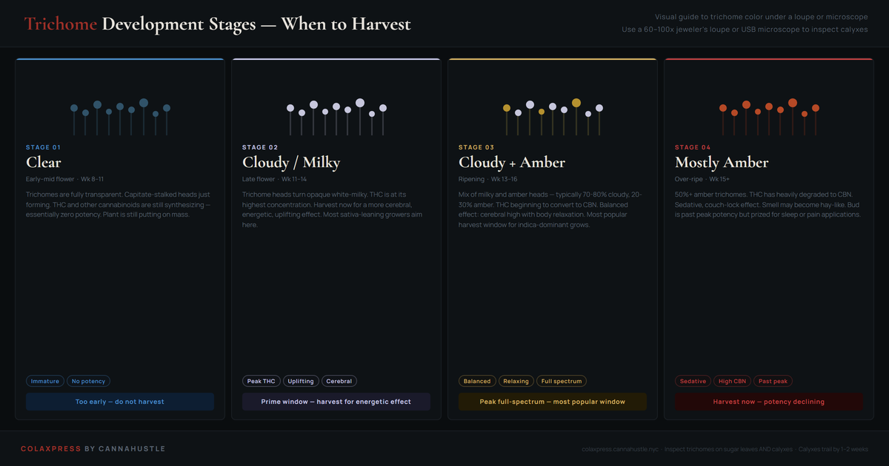

Trichome stages: what clear, cloudy, and amber mean for harvest timing.
Trichomes are the resin glands on cannabis flowers, leaves, and stems. They produce and store THC, CBD, terpenes, and other cannabinoids. The color of the trichome head — visible under a 60–100x jeweler's loupe or USB microscope — is the most reliable indicator of harvest readiness. Pistil color (the red-orange hairs) gives a rough estimate; trichome inspection gives you precision.
The difference between harvesting on week 13 versus week 15 can mean 30–40% more amber, a completely different cannabinoid ratio, and a noticeably heavier body effect. Trichomes are not just a harvest checklist — they are the mechanism behind the effect profile you are aiming for.

How to inspect trichomes correctly
A 60x jeweler's loupe is the minimum. At 40x you can see that trichomes exist; at 60x you can see whether they are clear, cloudy, or amber. At 100x the difference is unambiguous. USB microscopes (connected to a phone or laptop) are easier to use than handheld loupes because you are not trying to hold still two centimeters from a bud under grow lights.
The critical detail: inspect the calyxes, not the sugar leaves. The small round structures that form the bud — where the pistils emerge — are the calyxes. Sugar leaves (the small leaves covered in trichomes that protrude from the bud) amber 1–2 weeks earlier than the calyxes. If you are timing harvest by sugar leaf amber content, you are consistently harvesting early.
Take samples from different bud sites: top colas mature faster than lower buds in most strains. If your upper colas are at 30% amber but lower buds are still 90% cloudy, the right answer is to harvest tops and let lowers run — or compromise at a middle point if your grow doesn't support selective harvest.
| Profile | Amber % | Effect |
|---|---|---|
| All cloudy | 0–5% | Energetic, uplifting |
| Mostly cloudy | 15–25% | Balanced, creative |
| Mixed | 25–35% | Relaxing, full body |
| Mostly amber | 50%+ | Sedative, couch-lock |
Clear trichomes
Fully transparent trichome heads indicate the plant is still producing cannabinoids. Harvesting at this stage gives you essentially nothing — low potency, harsh taste, no effect profile. This stage appears in mid-flower, typically weeks 8–11 depending on strain. Patience is the only answer here.
Cloudy / milky white
The trichome head has filled with secreted resin and turned opaque. This is the highest THC concentration point in the plant's life cycle. Harvest here for a clear-headed, energetic, often cerebral effect. Sativa-dominant strains and daytime users typically aim for this window. Effects tend toward anxiety and paranoia in high doses — the absence of CBN means no counterbalance.
Mixed cloudy and amber
The most sought-after harvest window for most craft growers. When 20–30% of calyx trichomes have gone amber, the THC-to-CBN conversion has begun but the majority of THC remains intact. The result is a balanced cannabinoid profile: still plenty of THC-driven potency, with enough CBN to soften the edge and add body relaxation. This is the "full-spectrum" window.
Mostly amber
At 50%+ amber, THC degradation is significant. The primary effect driver shifts toward CBN, which is sedative and non-psychedelic in isolation. Some growers target this specifically for insomnia or pain management. If you were aiming for cloudy/amber and missed it, you are here — the flower is still worth curing and consuming, just adjust expectations on the effect profile.
Trichome harvest questions
When should you harvest based on trichome color?
The craft harvest window is 20–30% amber trichomes on the calyxes, with the remainder cloudy white. At this point, THC conversion to CBN has begun but the majority of THC remains intact — the result is a balanced cannabinoid profile with potency and body relaxation. For a more cerebral, energetic effect, harvest when trichomes are predominantly cloudy with minimal amber (5–10%). For a sedative, couch-lock effect, wait until 50%+ of calyxes show amber. The trichome profile is the only reliable guide — strain-advertised flower times can be off by two weeks or more in either direction depending on environment.
How do you inspect trichomes accurately?
A 60x jeweler's loupe is the practical minimum. At 40x you can confirm trichomes exist but cannot reliably tell clear from cloudy. At 60x the distinction is visible with care; at 100x it is unambiguous. A USB digital microscope eliminates the difficulty of holding perfectly still 2 cm from a bud under grow lights and is worth the modest cost for any serious grower. The critical practice: inspect calyx trichomes specifically — the small round structures where pistils emerge from the bud — not the sugar leaves. Sugar leaves amber 1–2 weeks before the calyxes and using them for timing leads to consistently early harvests.
Why do sugar leaves amber before the buds?
Sugar leaves have lower trichome density and enter senescence — metabolic wind-down — before the calyx tissue reaches full ripeness. The plant is directing resources toward seed production in the calyxes, so calyx trichomes remain metabolically active longer than those on sugar leaves. If your sugar leaves show 30% amber and your calyxes show 5% amber, the plant is probably 10–14 days from the harvest window. The calyxes are the correct reference point because they contain the highest concentration of the cannabinoids and terpenes that determine the final effect and flavor profile.
What is the difference between cloudy and amber trichomes?
Cloudy (milky white) trichomes have fully formed, resin-filled heads at peak THC concentration. The effect profile at this stage leans energetic and cerebral. As time passes, THC oxidizes into CBN — the trichome head shifts from white to amber as this conversion progresses. CBN is mildly sedative and contributes body heaviness. As the cloudy-to-amber ratio shifts, the effect profile moves from cerebral toward relaxing and eventually sedative. Most craft growers target the 70/30 cloudy-to-amber range as a balanced full-spectrum window before CBN accumulation dominates the experience.
Related harvest guides
Harvest ripeness indicators
Pistil color, bract swelling, and the full set of visual signals to read alongside trichomes.
Drying and curing chart
Environment targets for drying and curing — preserving the terpene profile you worked to build.
Grow stage timeline
Week-by-week timeline showing when the ripening and flush window typically arrives in a compact DWC run.